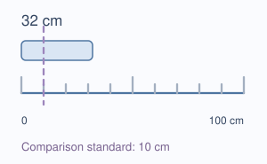
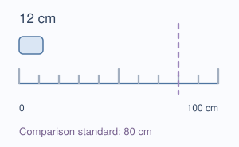
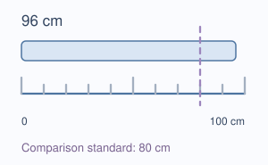

Causal decidability · The Gemma case
Which explanations
survive the patch?
Measuring a change is one question. Knowing which explanations it rules out is another. Our method makes that second question explicit.
The question, made concrete
Transfer the standard.
Or copy the answer?
Gemma judges whether a length is small or large relative to a comparison standard. We move one internal state from a donor prompt into two different recipient prompts.



Answer copy: give both the donor’s answer distribution.
Before patching, we check that these predictions are distinguishable. Afterward, we test them against the same observed answers.
What the test established
A narrower set.
No single explanation.
The evidence excluded five specified local predictions, including standard transfer and donor-answer copy. Four remained open. An unchanged-output counterfactual excludes the same five; this count does not demonstrate semantic transfer.
One patch site · 20 development families · Gemma
The limit: small changes were measured, but the registered tests did not establish sufficient separation from the original output and matched disturbances. These are local exclusions, not identification of Gemma’s natural mechanism.
What the method adds
A traceable boundary: which alternatives this experiment can separate, which it excludes, and which it leaves unresolved. A comparator given the same rivals and rule reached the same decisions. Stopped designs are a separate outcome: Gemma’s two-donor menus and GPT-2 Round 3B did not qualify, so their planned patches did not run.
Under the old curve rule, D0 would have qualified 13/20 families (18 needed; post-hoc counter-check, not yet public), blocking D1. The revision was disclosed before fresh D0/D1. The two-donor v2 stop reflected that rule, not general impossibility.
The download contains reports and aggregate evidence, not the original score records or analysis code.